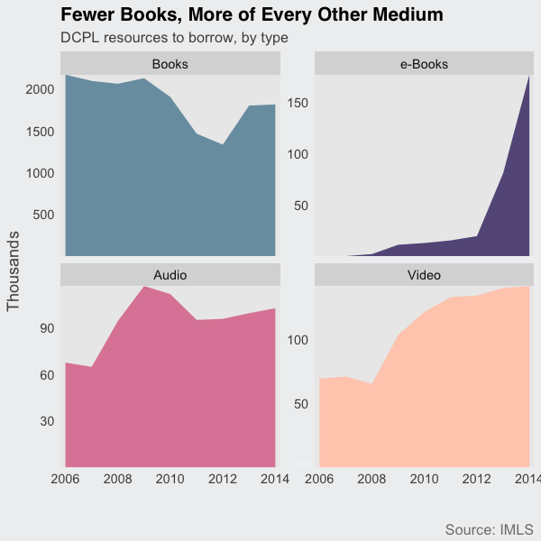
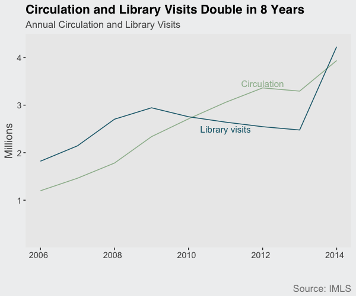

October 19, 2016 // originally published by Greater Greater Washington
As reading habits change, so does the DC Public Library. With the number of books down, but other media and library visits up, the library is much more than its book collection.
The meaning of curling up to a book has broadened over the past decade. It could mean an actual physical book, but also scrolling down your smartphone or listening to a book over headphones. With a limited collections budget, how has the DC Public Library balanced traditional physical books with newer mediums?
The DC Public Library's collection has hardly been stable over the past eight years, with the number of books dropping sharply between 2009 and 2012. Collections are largely driven by a budget that fell from from $4.27 million in 2009 to $1.67 million in 2012 and then bounced back to $3.85 million in 2013.
Renovations in public libraries across DC also led the library system to better catalog its resources and reassess its physical collection and cull books considered outdated or in bad shape.
A constant across the period, however, is the declining proportion of books in the overall library collection. Books went from being 94% of the system's physical collection to just 81% in 2014. The library system has far more e-books, audio, and video materials than it used to.

While books still dominate the library’s collection, audio and video have been on a swift rise. Audio resources, like e-audiobooks and CDs, have grown over 50%; video, like DVDs and streaming, has doubled. While DC Public Library’s initial uptake of e-books was slow, their collection has increased tenfold since 2011.
Books are the only medium which have been on the decline, falling 16%, in large part due to the removal of outdated or worn books during library renovations. This isn’t to say the DCPL has stopped acquiring books, as @booksfordc, which tweets in real time new books to the DC Public Library catalog, shows.
DC residents seem to be fans of the library’s changes, with circulation and library visits both doubling over the period. sense with the decline of books and rise of e-resources. But new strategies and renovated neighborhood libraries means the decline is likely not permanent.
According to DCPL Executive Director Richard Reyes-Gavilan, the decline in books has the side benefit of freeing up space for programs, like yoga, Memory Lab, and tech and financial literacy training. Indeed, library programs increased 75% over the period. While books may be on the decline, there are more and more options bringing people into libraries.

Technical notes: The data is available through the Institute of Library and Museum Services (IMLS) Public Libraries Survey. Data prior to 2006 is considered unreliable by the DCPL. Data excludes resources available through third-party providers, like Freegal, which likely means the proportion of books is even lower. You can find complete code for this on my github page.